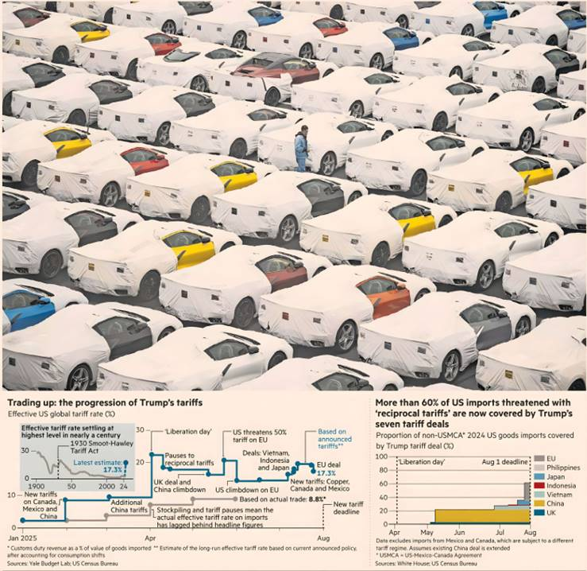

President's chaotic rollout creates US levy wall that threatens to trigger reordering of global trade
AIMEE WILLIAMS — WASHINGTON
ALAN SMITH, JONATHAN VINCENT AND EMILY HERBERT — LONDON
Donald Trump has pushed US tariffs on foreign goods to the highest level since before the Second World War as he enacts a sweeping protectionist agenda.
The wall of levies announced by the president since he took office again in January has taken the country’s effective tariff level to an estimated 17.3 per cent, according to Yale University’s Budget Lab.
The figure, incorporating the latest deal agreed with the EU at the weekend, brings the total US levies close to the 20 per cent last seen during the widespread tariff increases in the years after the 1930 Smoot-Hawley Act.
Trump's time in office has been marked by tariff threats followed by climbdowns and reversals but he has by this point made agreements that lock in levies on almost 45 per cent of all US imports. That tariff wall threatens to trigger a reordering of global trade.
“Trump has engineered a new era of US trade protectionism that will eventually reverberate through the entire global trading system,” said Eswar Prasad, a professor of trade policy and economics at Cornell University.
The chaotic rollout of Trump’s trade policy has been marked by a series of U-turns, as well as exemptions for critical products and sectors, as countries rush to negotiate with Washington.
In April, Trump was forced to suspend the highest levels of his “reciprocal” tariffs after roiling global stock markets and a sharp sell-off in US Treasuries.
He has subsequently struck limited deals or offered substantial carve-outs to countries covering 60 per cent of the US imports that had been subject to the reciprocal tariffs, blunting the full force of the highest levies he had threatened.
This excludes imports from Mexico and Canada, which are subject to a separate tariff regime that Trump said was aimed at tackling fentanyl trafficking and border security.
The deal with the EU is the largest in a series of agreements hailed by Trump, although the deals with six countries plus Brussels fall short of the president’s goal of 90 deals over his 90-day reciprocal pause.
Alongside the bloc, Trump has offered reprieves to the UK, Indonesia, the Philippines, Japan and Vietnam.
Markets have reacted positively to those deals, while world leaders hailed them: Ursula von der Leyen, president of the European Commission, called the EU’s agreement a “breakthrough” that delivered “certainty in uncertain times”.
Yet they have left the countries concerned facing far steeper tariffs on their goods than before the start of Trump’s second term.
The US’s effective tariff rate of 17.3 per cent, according to the latest Yale estimate, is the highest since 1935, when the rate was 17.5 per cent. This number would rise further if Trump carried out his threat to impose the full reciprocal tariffs on countries that fail to strike a deal with him by August 1.
Alan Wolff, a senior fellow at the Peterson Institute for International Economics, said the tariffs would cause “shifts of patterns in trade” as some companies moved supply chains.
“The US, the world’s best market in Trump’s view, is now not as good as it was. Companies may look for other places to sell their goods, where their access has not been impaired.”
Of the agreements Trump has reached, written statements or texts have been produced only for the deals with the UK and Indonesia, while some of the deals have featured differing accounts of the details. Vietnam has not confirmed it agreed to the tariff rates announced by Trump, while Japanese and US officials have offered different interpretations of the investment pledges outlined in their deal.
The US had separately agreed to de-escalate tariffs with China in May after Trump ratcheted up his additional levies to 145 per cent, sparking fears of, in effect, a trade embargo.
While Trump heralded the London talks as a “deal,” the two countries have made no progress resolving the fundamental economic and trade differences that existed before the president started his trade war.
Trump has, meanwhile, offered significant carve-outs to Mexico and Canada, two of the US's largest trading partners, although he has not struck deals with them since his April 2 pause.
Investors have welcomed the spate of agreements, betting that the threat of a full-scale trade war has been averted. Stocks in the US, Europe and Japan have all touched record highs in recent days, capping a rapid comeback from April’s market rout.
“It’s all just relief,” said Gerry Fowler, head of European equities strategy at UBS. “A deal is better than no deal.”
But these rallies might yet give way to pain for investors once the reality of the high tariffs sank in, Fowler added. After relief at a reduction in risk in the days after a deal, “the market turns back to fundamentals.”
In the case of the EU deal, “15 per cent will have a material impact on earnings, and there is going to be a tariff factor coming through in earnings revisions for the next six months,” Fowler said.
The dollar, by contrast, is yet to recover from the market turmoil that followed April’s “liberation day” tariff announcement. The US currency remains nearly 10 per cent lower against a basket of rivals this year, despite a 0.8 per cent rebound on Monday.